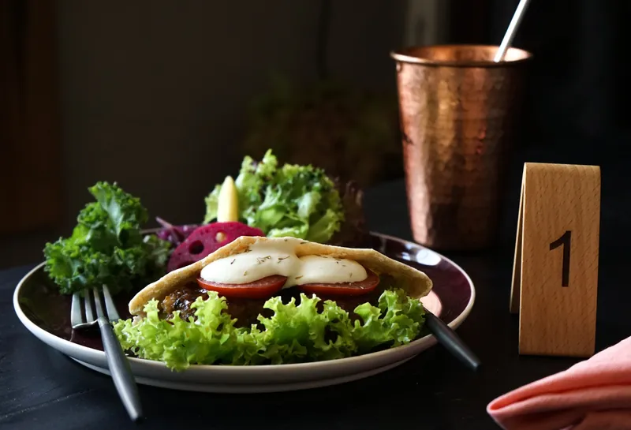
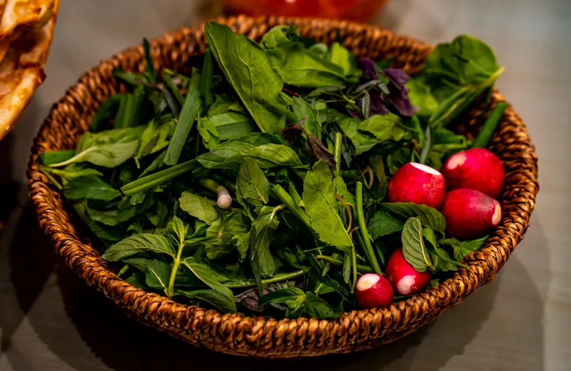
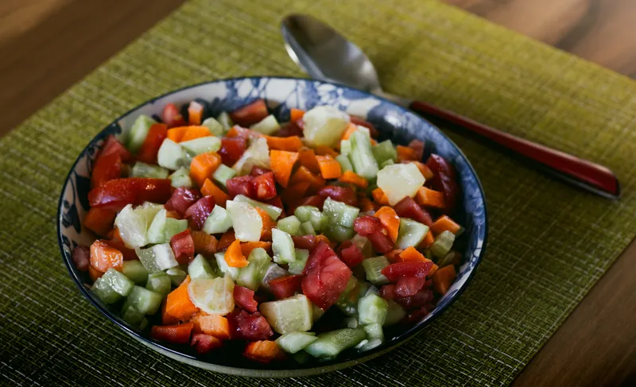

Cocina vegana llena de sabor
Descubre una propuesta gastronómica basada en ingredientes naturales, donde cada plato respeta el producto y sorprende por su creatividad

Ingredientes frescos y naturales
Nuestra cocina vegana se basa en el uso de ingredientes frescos, de origen vegetal y seleccionados cuidadosamente. Verduras de temporada, legumbres y cereales se combinan para crear platos equilibrados y llenos de vida.
Cada receta está pensada para sorprender tanto a quienes siguen una dieta vegetal como a quienes buscan descubrir nuevos sabores.
Además, cuidamos cada detalle en la selección de ingredientes para asegurar que cada plato no solo sea saludable, sino también atractivo y lleno de color.
Creatividad en cada plato
Lejos de ser una cocina limitada, la gastronomía vegana destaca por su innovación. En Gastro reinterpretamos recetas tradicionales con un enfoque vegetal, logrando sabores sorprendentes y presentaciones atractivas.
Experimentamos con técnicas modernas y combinaciones inesperadas para crear platos únicos que despiertan los sentidos. Desde texturas crujientes hasta cremas suaves, cada elaboración busca ofrecer una experiencia completa
Nuestro objetivo es demostrar que la cocina vegana puede ser tan variada, sofisticada y deliciosa como cualquier otra, rompiendo prejuicios y ampliando horizontes gastronómicos.


Una elección consciente
Elegir opciones veganas no solo es una apuesta por la salud, sino también por el respeto al medio ambiente. Cada plato refleja un compromiso con la sostenibilidad y una forma de disfrutar de la comida de manera responsable.
Reducir el consumo de productos de origen animal contribuye a disminuir el impacto ambiental, promoviendo un modelo alimentario más sostenible. En Gastro creemos que cada pequeña elección cuenta y puede marcar la diferencia.
Por ello, trabajamos para ofrecer una experiencia que no solo satisfaga el paladar, sino que también esté alineada con valores de respeto, equilibrio y conciencia global.